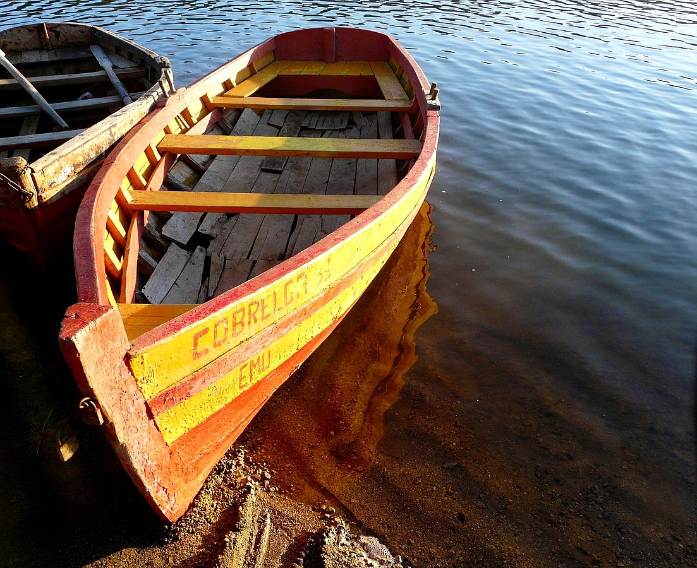

Title
Era un poco más de las cuatro de la tarde de un veranito de San Juan.
Unas quince o veinte veces, desde el mediodía, Sandra, la criada,
se había apartado de la ventana de la cocina que daba al lago,
con la boca apretada en un gesto de disgusto. Esta última vez, al apartarse,
ataba y desataba distraídamente las cintas de su delantal,
aprovechando el escaso juego que le permitía su enorme cintura.
Después regresó a la mesa esmaltada y depositó su cuerpo gallardamente
uniformado en la silla que estaba frente a la señora Snell.
La señora Snell había terminado la limpieza y el planchado y tomaba su
habitual taza de té antes de dirigirse a pie por la acera hasta la
parada del ómnibus.
Published March 20,2020